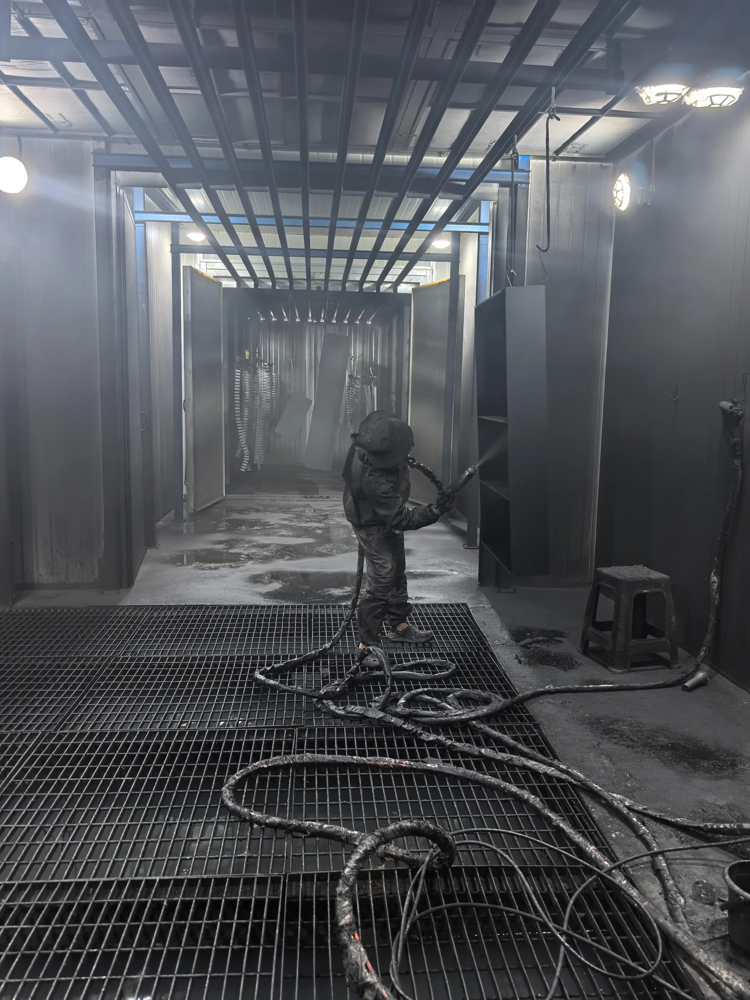
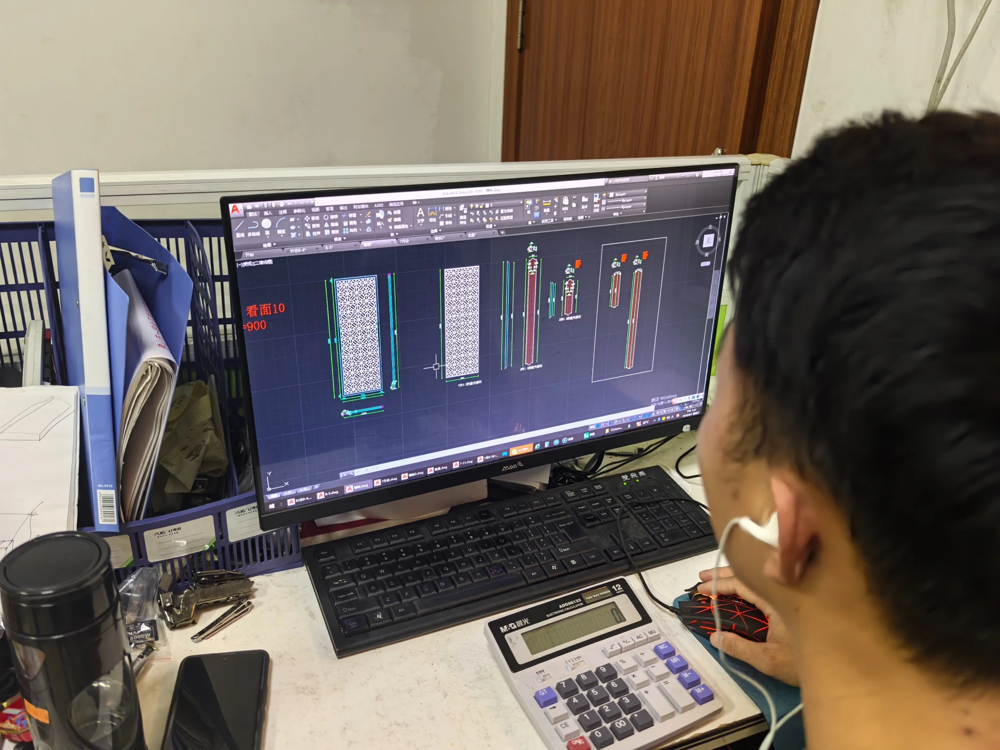
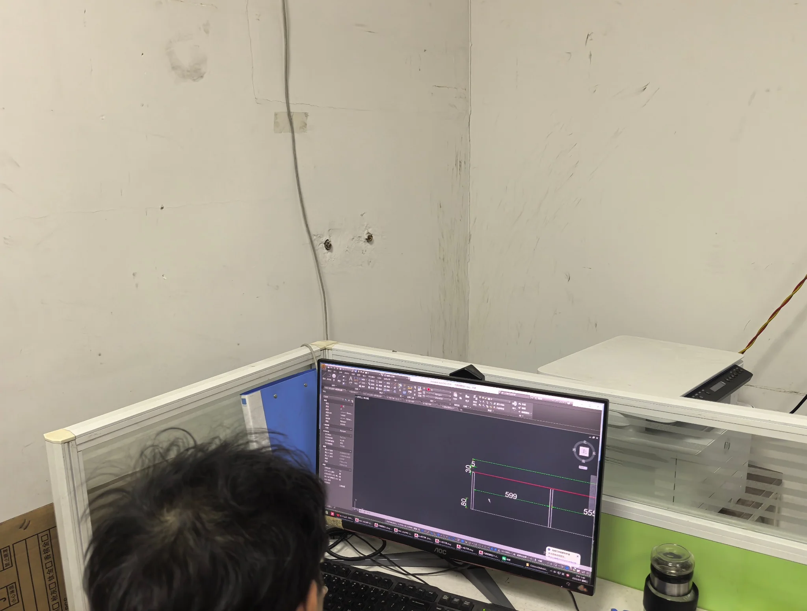
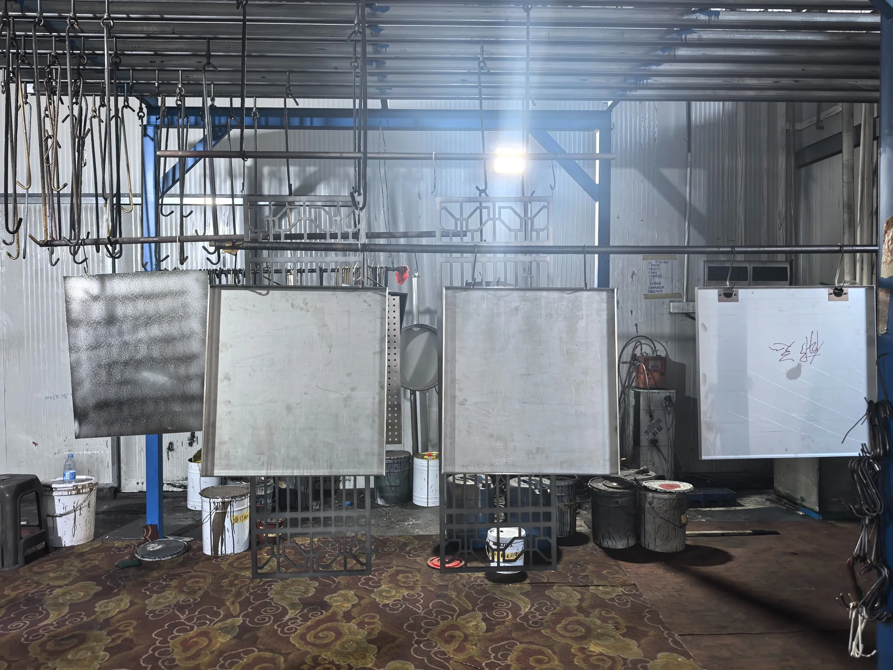
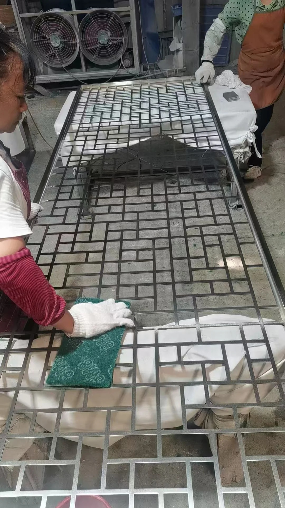
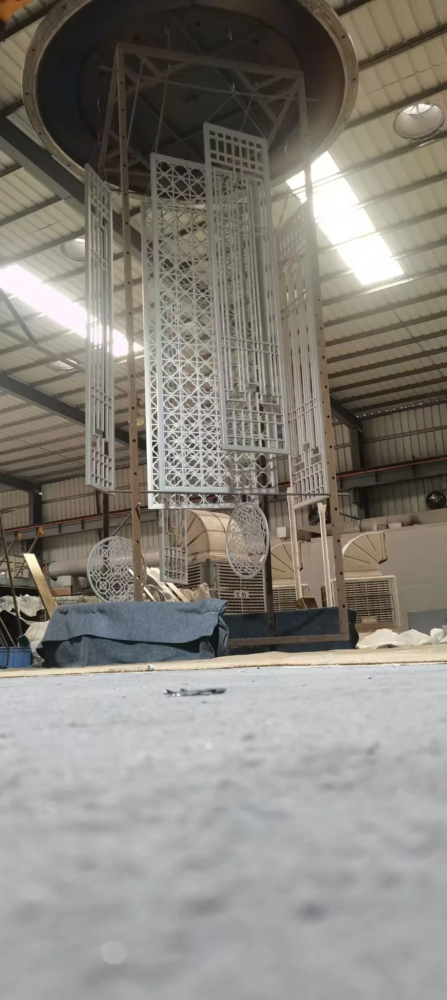

01
Laser Cutting
Real production footage showing the core processes from sheet fabrication to structural forming.
After receiving drawings or reference images, we complete shop drawing development and fabrication breakdowns, then coordinate metal fabrication, surface finishing, lighting systems, quality inspection and export packing.

Fluorocarbon Coating
Shop Drawing Development Finished PVD-Coated Product
Finished PVD-Coated ProductBased on client dimensions, reference images or design drawings, our engineers develop the structure, verify dimensions and prepare fabrication drawings for production.


This section shows shop drawing development and fabrication breakdowns. Based on client drawings, dimensions or reference images, the team confirms dimensions, materials, surface finishes, colours and construction details before releasing work to production.
After fabrication breakdown, sheet material is cut, V-grooved, bent, welded, ground and preliminarily assembled to prepare each product for surface finishing.
Real production footage showing the core processes from sheet fabrication to structural forming.
Real production footage showing the core processes from sheet fabrication to structural forming.
Real production footage showing the core processes from sheet fabrication to structural forming.
Real production footage showing the core processes from sheet fabrication to structural forming.
Products requiring solid-colour finishes, including matte black, sandblasted champagne gold, gunmetal grey or colour matching to a sample, can follow the fluorocarbon coating workflow. The photographs show paint and colour preparation, surface cleaning, hanging, spraying and finished work.

Prepare coatings and supporting materials to the approved colour sample.

Clean the workpiece surface to reduce the effect of oil and contaminants on the coating.

Suspend and secure workpieces for coating and production flow.

Apply the coating in the spray area, controlling coverage and visual consistency.

After coating and curing, workpieces proceed to inspection and factory assembly.
The PVD route is suitable for champagne gold, rose gold, titanium gold and other metallic finishes. These photos show cleaning, hanging and completed coating.



After fluorocarbon or PVD-finished components return to the factory, we inspect colour and surface quality and install LED strips, illuminated panels, power supplies, control modules and other project accessories.

Check connection points and structural condition, then install the required accessories and components.

Install LED strips, wiring, power supplies and control components in line with the design requirements.

Using reflected light, we inspect flatness, colour consistency, scratches, edges, corners and assembly condition, then verify dimensions against drawings and order requirements with a tape measure.
Based on product dimensions, surface finish and transport method, we reinforce products with EPE foam, bubble protection, corner guards and custom wooden crates before final review, loading and shipment.
 Inner Packaging & Corner Protection
Inner Packaging & Corner Protection Custom Export Wooden Crate
Custom Export Wooden Crate Loading & Shipment
Loading & ShipmentWe will assess product structure, materials, surface finishing, lighting configuration, quantity and delivery destination to prepare a project quotation.
Request a Quote